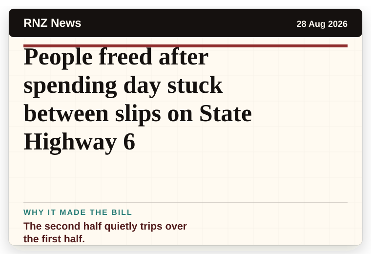
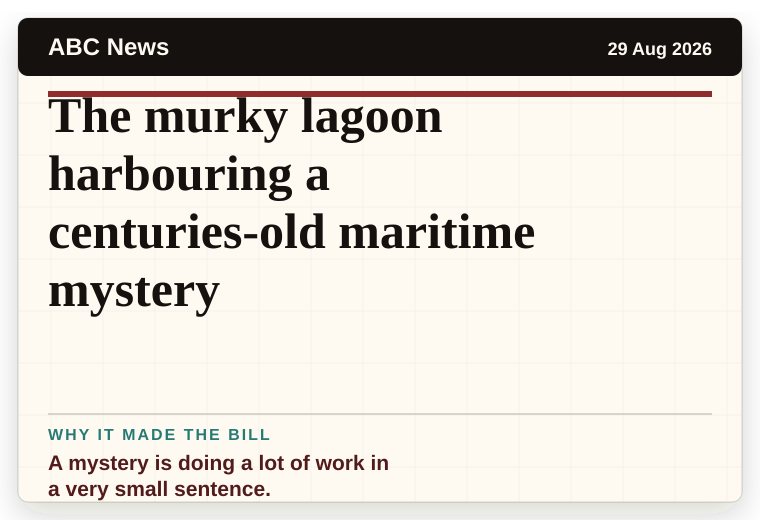
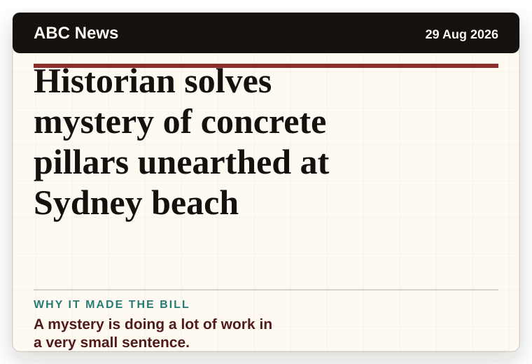
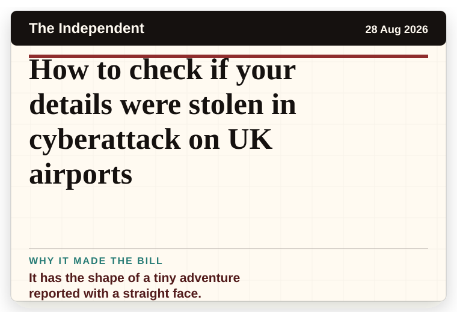
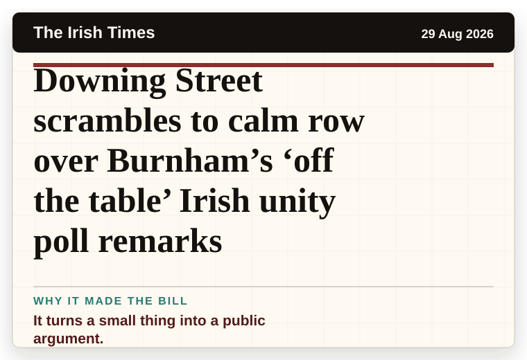
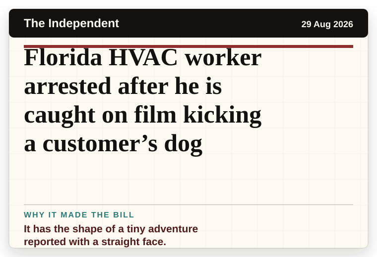
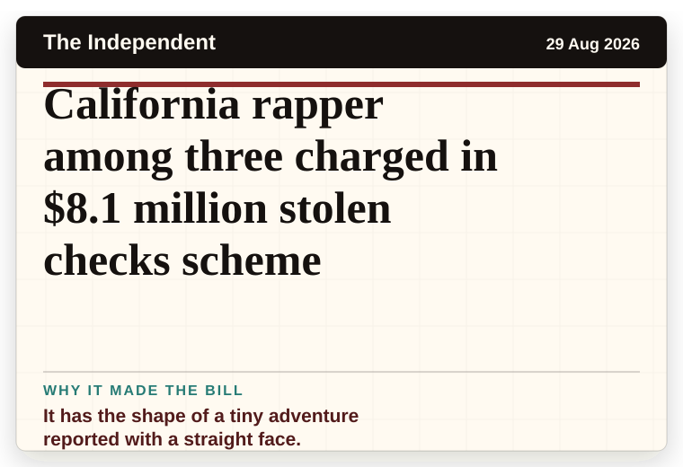

NT News
Australia
Your weekend sorted: AFLW, giant picnics and live music
The scale is doing deadpan comedy.
The latest daily picks, linked back to the original sources. Search the room, pick a source, or follow a headline out to the full story.
Record updated: 29 Aug 2026, 08:14 AM AEST
Showing 21 headline candidates from the refresh run completed on 29 Aug 2026, 08:14 AM AEST.
The scale is doing deadpan comedy.

The scale is doing deadpan comedy.

The headline is already trying not to laugh.

A household object has somehow reached the news desk.

The headline is already trying not to laugh.

A wonderfully specific detail has taken centre stage.

A very ordinary object has wandered into serious news.

It has the shape of a tiny adventure reported with a straight face.

It has the shape of a tiny adventure reported with a straight face.

A wonderfully specific detail has taken centre stage.

A wonderfully specific detail has taken centre stage.

A mystery is doing a lot of work in a very small sentence.

A wonderfully specific detail has taken centre stage.

The second half quietly trips over the first half.

A mystery is doing a lot of work in a very small sentence.

A mystery is doing a lot of work in a very small sentence.

The word chaos gives it open-mic energy.

It has the shape of a tiny adventure reported with a straight face.

It turns a small thing into a public argument.

It has the shape of a tiny adventure reported with a straight face.

It has the shape of a tiny adventure reported with a straight face.